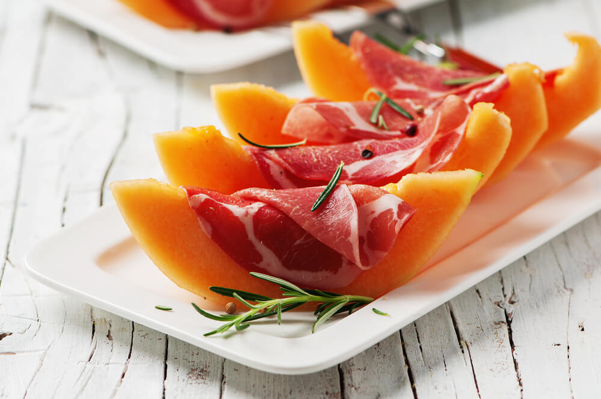

HOME
Prosciutto e Melone

An easy and refreshing starter featuring cantaloupe and cured ham.
Ingredients:
- 1 cantaloupe
- cured ham slices
Steps:
- Slice the cantaloupe into even wedges, removing the skin and seeds.
- Wrap each wedge of cantaloupe with one slice of cured ham.
- Serve cold.